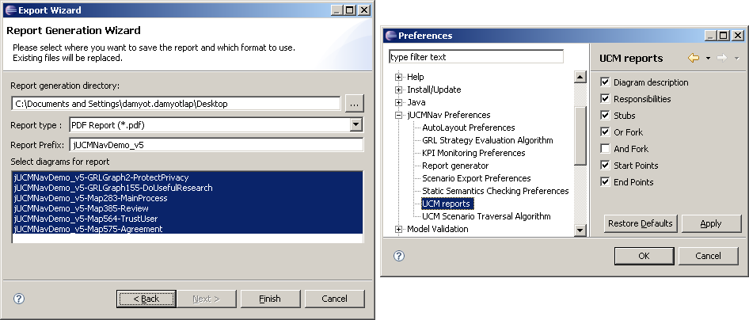

jUCMNav is a graphical editor and an analysis and transformation tool for the User Requirements Notation (URN). URN is intended for the elicitation, analysis, specification, and validation of requirements. URN combines modelling concepts and notations for goals and intentions (with GRL, mainly for non-functional requirements and quality attributes) and scenarios (with UCM, mainly for operational requirements, functional requirements, and performance and architectural reasoning). In particular, URN has concepts for the specification of goals, non-functional requirements, rationales, behaviour, scenarios, and structuring. URN allows software and requirements engineers to discover and specify requirements for a proposed system or an evolving system, and analyse such requirements for correctness and completeness. URN is applicable within standards bodies and industry. It helps to describe and communicate requirements, and to develop reasoning about them. The main applications areas include telecommunications systems, services, and business processes, but URN is generally suitable for describing most types of reactive systems and information systems. The range of applications is from business goals and requirements description to high-level design.
The Goal-oriented Requirement Language (GRL)
GRL in a Nutshell
The Goal-oriented Requirement Language is a graphical language for supporting goal-oriented modelling and reasoning about requirements, especially non-functional requirements and quality attributes. It provides constructs for expressing various types of concepts that appear during the requirement process. GRL has its roots in two widespread goal-oriented modelling languages: i* and the NFR Framework. Major benefits of GRL over other popular notations include an integration with a scenario notation and a clear separation of model elements from their graphical representation, enabling a scalable and consistent representation of multiple views/diagrams of the same goal model.
Why use the Goal-oriented Requirement Language?
Goals become an important driver for requirements elaboration. Yet, stakeholders goals and objectives are complex and will conflict
GRL expresses and clarifies tentative, ill-defined and ambiguous requirements
Models goals and their importance to stakeholders
Supports argumentation, negotiation, conflict detection & resolution, and in general decisions
Captures decision rationale and criteria (documentation!)
GRL identifies alternative requirements and alternative system boundaries
GRL provides clear traceability from strategic objectives to technical requirements
GRL allows reuse of stable higher-level goals when the system evolves
GRL strategies help visualize satisfaction levels related to high-level decisions
Nothing like this in UML...
The Use Case Maps (UCM) Notation
UCMs in a Nutshell
The Use Case Map notation is a graphical language that employ scenario paths to illustrate causal relationships among responsibilities. UCM models provide an integrated view of behaviour and structure by allowing the superimposition of scenario paths on a structure of abstract components. The combination of behaviour and structure enables architectural reasoning after which UCM specifications may be refined into more detailed scenario models such as MSCs and UML sequence diagrams, or into state machines in SDL or UML statechart diagrams and finally into concrete implementations. Validation, verification, performance analysis, interaction detection, and test generation can be performed at all stages. Thus, the UCM notation enables a seamless transition from the informal to the formal by bridging the modeling gap between goal models and natural language requirements (e.g. use cases) and design in an explicit and visual way. The UCM notation allows the user to delay the specification of component states and messages and even, if desired, of concrete components to later, more appropriate, stages of the development process. The goal of the UCM notation is to provide the right degree of formality at the right time in the development process.
Why use Use Case Maps?
Bridge the modeling gap between use cases, requirements, and design
Link behavior and structure in an explicit and visual way
Provide a behavioral framework for making (evaluating) architectural decisions at a high level of design
Characterize the behavior at the architecture level once the architecture is decided
Convey a lot of information in a compact form
Use case maps integrate many scenarios
Enables reasoning about potential undesirable interactions of scenarios
Provide ability to model dynamic systems where scenarios and structures may change at run-time
Business processes
E-commerce applications, Web services
Distributed systems based on agents
Effective learning tool for people unfamiliar with the domain
UCM scenarios may be transformed (e.g., into MSC/sequence diagrams, performance models, test goals)
Reference
For an in-depth explanation of both notations, which are portions of the User Requirements Notation (URN), please visit UseCaseMaps.org
Quick Tour of Eclipse and jUCMNav
Creating and Opening Files
In Eclipse, one must understand that all files and folders must be in projects. You can create a new project by using a wizard: File -> New -> Project.
Choose Simple -> Project.
Once a project is created, select it and create a new jUCMNav file (*.jucm)
File -> New -> Other
jUCMNav -> Use Case Map / GRL Graph, Click next.
Choose the containing project and name your .jucm file.
Select whether you want the URN model to include a default UCM and/or GRL diagram.
Click finish.
Later, you can open and close files by using the Navigator view. You can also use the File -> Import wizard to import existing files from the file system into your Eclipse workspace.
Perspectives
Now that you have an open file, you might be wondering why your interface does not look exactly like the screenshots below. This is because Eclipse uses perspectives to layout all the windows in the interface. Perspectives can be saved, reset and changed.
jUCMNav has its own perspectives (one for regular editing as in the first screenshot, the other for scenario execution as in the second screenshot).
Window -> Open Perspective -> Other
Choose jUCMNav (or jUCMNav Execution).
Later, you may return to another perspective by using the alternatives presented in the Windows menu bar or by clicking on the >> button at the top right of your screen.
Views and Editor
Navigator View
Top left corner
Contains all the files in your projects.
Editor
Center of the page.
The main location for manipulating URN models.
When one opens a file, an editor is opened.
Because one file can contain multiple GRL/UCM diagrams in one model, this editor has multiple tabs at the bottom.
Will be described in greater depth in further sections.
Double click on the title to use the whole screen to edit your model.
Palette
There is a collapsible palette inside of the editor, on its right side.
It can be moved to the left or side, or collapsed if screen real estate is scarce.
The described contains elements that can be inserted into a diagram.
Different layouts and icon sizes are available by righ-clicking on the palette.
Will be studied in greater depth in further sections.
Important: Press ESC to replace the currently selected tool with the selection tool.
Outline View
(see additional screenshot below)
Bottom left corner
Shows an outline of the contents of the URN specification currently loaded editor.
From this view, you will be able to add/remove UCMs/GRL diagrams and manipulate component, responsibilities, actors, and intentional element definitions.
Selecting something in the editor will reflect the selection in the outline and vice-versa.
Click on the jUCMNav icon in the outline to toggle to the graphical overview.
The "C" icon allows to see the various concerns in the model (for Aspect-oriented URN).
Scenarios / Strategies view
Bottom middle
Shows the scenarios and strategies that have been defined for this URN model.
One can switch between design and execution view by using the icons in this view's toolbar
While in execution view, if we select a scenario or strategy, it will be executed and the results will be visually shown.
Properties View
Bottom right side of screen; can be moved elsewhere if needed, as with any Eclipse view.
When an element is selected in the Editor, its properties are shown here.
Many properties can be updated through this view.
For complex properties, dialogs or wizards may be offered to simplify the manipulation.
Elements View
Behind the Outline view.
For UCMs: Shows the names/descriptions of every responsibility in the current map.
For GRL: Shows the names/descriptions of every intentional element in the current graph
Problems View
Behind the Properties view.
jUCMNav scenarios may generate errors / warnings that are added in this view.
Double-clicking on an error / warning will bring you to the model element that caused the problem.
Toolbar
At the top of the interface, there is a toolbar of buttons.
It contains a zoom selector, autolayout mechanism, undo-redo buttons and allows you to go back through your navigation history.
Furthermore, you may hide some elements/labels, a useful feature when including screenshots in other documents.
Preferences
Open the Window -> Preferences -> jUCMNav Preferences menu to edit jUCMNav's preferences.
The top-level preferences are about default colours, settings for visualization and automatic creation of GRL links, and options for the condition editor.
Auto-layout preferences are mainly about stating where GraphViz (required) is installed, orientation and page size.
Part II - Basic Editing
Note: Many of these features are illustrated with Flash demos (see JUCMNav Tutorials).
Keyboard shortcuts
The following text discusses actions that can be performed using the mouse.
Most of these can be done using the standard GEF editor keyboard shortcuts.
With an element selected, use the arrow keys to change your selection. Hold the Ctrl or select key while using the arrow keys to expand your selection.
With elements selected, hit the . (period) key. Your arrow keys will now allow you to move the selected elements. Hit enter to confirm the new location.
Using the . (period) key, you can cycle between move and resize different bounds. For example, select a component, hit period twice and you can resize its right bound using the arrow keys and confirm the new size using enter.
Diagrams
Adding a GRL or UCM diagram
This can be done in many ways:
jUCMNav menu --> Add GRL Diagram (or Add Use Case Map)
Right-click any element in the Outline View --> Add GRL graph (or Add UCM)
Right-click any element in the Editor --> Add GRL graph (or Add UCM)
Notice a new diagram has been added in the outline and a new tab exists at the bottom of the page.
The new diagram has been opened in the editor.
To return to your previous diagram, click on its tab or its entry in the outline and it will be reopened.
Furthermore, the toolbar contains a back and next arrow to browse through your navigation history.
References versus Definitions
Some UCM and GRL constructs use references and definitions (UCM components, UCM responsibilities, GRL actors, GRL intentional elements, and GRL links).
When creating a reference, you also create a new definition. See the Outline view for a list of all definitions in a model.
You can drag and drop a definition from the Outline view (in the UCM/GRL definitions section) to the editor.
All references must be associated to a definition, but not all definitions must have references.
Unreferenced GRL/UCM definitions are grayed out in the Outline view
You can change the associated definition of a reference in the Properties view.
Properties such as name and descriptions are stored in the definitions. Modification of these properties update all references.
Note that definitions must have unique names.
Components (UCM) / Actors (GRL)
Insertion / Moving
To insert a component or actor reference, select it in the palette and click in the editor to insert it.
You may also click and drag when inserting to resize it on creation.
If you click anywhere on the component/actor reference, it is selected.
Once selected, you can move the component/actor in the editor.
If you click on the bounds of the component/actor, you may resize it.
When creating a component or actor, a label will be created automatically.
The label represents the name of the component/actor definition. If you change the name field in the properties, you will change the definition's name. All references in the editor will be updated.
You can also double click on a label to change it directly in the editor.
Other properties
You can change the fill and line color of references in the properties. All references will be updated. Note that if filled is false, the fill color will be ignored; the component/actor will appear transparent.
Components can have different kinds. You can change the component kind in the properties. Changing the kind will have a visual impact on the figure.
One cannot move or resize fixed components/actors.
Intentional Elements (GRL)
Insertion / Editing
To create a new intentional element, select it type (Softgoal, Goal, Task, or Resource) in the palette and click in the editor to insert it (or drag and drop the element from the palette to the editor).
Intentional elements are resized automatically in editor. The element size is calculated using the element name length.
You can double click on an intentional element to edit it name.
You can change an intentional element type using the properties view.
Other properties
Fill and line colors can be changed in the properties. Note that fill and line colors are ignored if a GRL strategy is applied.
Criticality, priority and decomposition type are properties associated with the references. Modifying the value for a reference does not affect other references in the model.
Beliefs (GRL)
Creation / Editing
Create a belief using the belief element in the palette
Beliefs are local to diagrams
The size of the element is set based on the length of the description
The description can be modified by double-clicking on the belief
Belief links
Links can be create between beliefs and intentional element references using the Belief Link tool. To create a link, select the tool, click on the starting element (belief) and on the destination element (intentional element reference).
Creating Paths (UCM)
Creation
To create a path, select the path tool in the palette.
Click once in the editor and notice a small path being created.
Notice the end point is selected.
Click elsewhere in the editor.
The path will be extended.
Repeat until satisfied and click the selection tool in the palette to disable this behaviour.
Extensions
Select a start or end point, choose the path tool in the palette.
Your next click will extend the path.
To insert an empty point on an existing path, click on a node connection with the path tool selected. Notice the new empty point was added and that the path's empty point is selected.
Inserting path elements
To insert path elements on a path, simply select the path element in the palette and click on the node connection on which it is to be inserted.
As with component references and definitions, the responsibilities that are inserted on a path are references. See the components section for more information about references versus definitions.
Decomposition, Dependencies, and Contributions (GRL)
Creation
Links can be created between intentional element. To create a link, select the type (Decomposition, Contribution, or Dependency). Then, click on start element and on the destination element.
Only one link can be create between two elements.
Links are created using references and definitions.
Contribution levels are set through the Properties view.
Elements bound to components (UCM) / actors (GRL)
By default, any element moved onto a component/actor is bound to it.
When bound, elements are moved and resized automatically if one moves or resizes the parent.
If you move a component/actor behind other elements, these will not be bound. Automatic binding occurs when moving elements onto components/actors.
If you wish to bind these other elements to a component/actors, you may use the contextual menu option to do so.
One can bind/unbind an element from its parent using either the contextual menu or property page.
One can bind/unbind all enclosed elements from a component/actor using the contextual menu.
Note the special behavior concerning fixed components/actors.
Working with labels (UCM/GRL)
Some labels are created automatically when an element is created: start points, end points, responsibilities, stubs, components, actors.
These labels contain the name of the element.
They can be moved around freely. When the labelled element is moved, the labels will move as well.
You can hide these labels by deleting them (contextual menu or delete key).
The name of the element can be changed directly in the editor by double clicking on the label.
Forks/Joins (UCM)
To insert a fork or join on a path, you can use the palette and do as you would with any other path node.
You can also use the palette and insert them directly on an empty point.
The contextual menus also allow you to replicate the same behaviour.
It is also possible to drag and drop a start point on a node connection or empty point to form an OR fork. The same is applicable for an dragging an end point on a node connection or empty point and creating an OR join.
If you need to change an OR fork/join into an AND fork/join, use the contextual menu.
Additional branches can be inserted on forks and joins using the contextual menu or by using the same drag and drop technique illustrated above.
Conditions (UCM)
The node connections exiting OR forks, timers and waits can have conditions that will be illustrated visually.
To insert a condition, select the node connections and modify its properties. You must change the label field to the condition you want to be displayed. The expression field is used for scenario evaluation.
Start points can have pre-conditions and end points, post-conditions. The behaviour is the same.
To hide a condition label, change its text to an empty string or delete it.
See the scenario portion of this guide to learn more about the syntax of conditions in jUCMNav.
Deletion (UCM/GRL)
You can select an element and use the contextual menu or press the delete key to remove it from the URN diagram. If a reference is deleted, its definition is not affected.
You can select multiple elements using your mouse or the select all option and delete them all.
You can delete elements via the outline, but can only delete definitions that have no references.
UCM
If a stub, join or fork is deleted, the existing branches will be truncated.
You can delete a portion of a path by deleting its start point or end point.
If only one entry/exist path subsists for a join/fork, it will be replaced with an empty point.
If no entry paths and no exist paths subsist for a stub, it will be deleted as well.
GRL
Deleting an intentional element reference delete all the link references associate to the element. The link definition is deleted if the model does not contain other references to the link.
Waiting places, timers and connects (UCM)
Timers can have a timeout path. Use the context menu to insert a timeout path. It has a special icon to help identify it.
As mentioned previously, waiting places and timers have conditions. The timeout path condition is the logical opposite of the regular path's condition. Therefore, one cannot add a condition on the timeout path.
To create a synchronous connection, select both an end point and a starting point, waiting place or timer to choose the connect elements option in the contextual menu.
Once connected, the path elements will move together. If they overlap, simply use the outline to select the one beneath to modify its properties.
To disconnect the elements afterwards, use the contextual menu.
Asynchronous connections work similarly, but using an empty point and starting point, waiting place or timer.
Drag and drop also works to create connections, for waiting places and timers only.
Part III - Advanced Editing
Zooming and view modes
There are controls in the toolbar located above the editor. Next to the obvious undo/redo buttons is located the zoom level drop down box.
Select a zoom level and the editor will be updated.
Note that only the currently opened diagram will be affected.
To the right of the zoom level drop down box is the view mode drop down box.
Using this drop down box, one can choose to hide all empty points from the editor or to hide all empty points and stub labels.
Auto-layout
In the toolbar, there is also a round button. Click on it to open the auto-layout wizard.
If you have GraphViz (dot) installed, the wizard will automatically position the elements of the current diagram.
Auto-layout is very useful when importing GRL catalogues into a URN model.
Auto-layout can be undone.
Using Stubs
Stub plugins
Open a stub's contextual menu and select the "Edit stub plugins" option.
This view allows you to bind a stub to other maps.
The left portion of the screen presents a list of possible maps that this stub can be bound to.
If the checkbox next to a map is checked, it is bound to this stub. Note that static stubs can only be bound to one map.
Check one box and observe the plugin tree at the middle of the screen.
Plugin tree
The plugin tree lists all the current bindings. Click on the binding between a map and the plugin and notice the new panel to the right of the screen.
The top part is for in bindings and the bottom, out bindings. This view presents the different bindings that could be added to the binding tree.
This panel has two columns. To the left are node connections that enter or exit the stub and, to the right, the start points or end points in the plugin map. To associate them, simply select one connection in the left part and a path node in the right part and click the bind (<->) button. Start points can be re-used.
If you ever need to delete this binding, select it in the plugin tree and press the delete button.
Binding condition
The bottom right portion of the view defines the condition that must be respected in order for this plugin to be activated. Click on ... to open the pseudo-code editor.
Labels (displayed between [...]) can be provided, together with descriptions.
A probability can also be associated with the binding, ans one can also indicate whether the plugin should be executed as a transaction.
Import/Export
Exporting Images
To export a diagram to an image (*.jpg, *.gif, *.png or *.bmp), select a diagram background, open the contextual menu and select the export option.
Alternatively, you could access the same option in the diagram's or URNSpec's contextual menu in the outline or by using the File -> Export -> Export UCM/GRL/URN menu.
Choose to export individual diagrams in order to produce diagrams for each individual file. Ctrl-A will select all diagrams.
Select the path where the images should be saved, the file type and select the diagrams to export, and press finish.
Other Import/Exports
jUCMNav's import/export mechanisms are extensible via plugins to jUCMNav.
jUCMNav allows users to export URN models to PDF documents or RTF (Word) documents.
Select File -> Export -> Generate a Report (or the context menu on a .jucm file in the Navigator view)

Select the target directory, the report format (PDF or RTF), the report name, and the diagrams to export. Then, click on Finish.
Preferences allow you to select the UCM elements to export, as well as the format of the page.
This export is work in progress. Among the current features present and missing:
The report includes the list of UCM variables and scenarios, but neither their definitions nor their diagrams.
The results of GRL strategies is included in a table, but the GRL elements are not yet explained in the diagrams.
GRL Catalogues
GRL catalogues are reusable high-level GRL models, often used to describe common model elements and relationships related to non-functional aspects.
Catalogues are used to start new models or add concerns to existing ones. They consist of a XML file describing intentional elements and links (only contributions and decompositions are part of catalogues).
To create a catalogue, in a URN model, use the export mechanism and choose to export the whole URN file. The file type is *.grl for catalogues.
To import a catalogue in a model, select import file in the contextual menu and select the .grl file to import.
The import mechanism creates all the intentional element and link definitions and create a new GRL diagram in model with all the imported elements and links. The autolayout is used to display the diagram.
Metadata
jUCMNav allows users to add metadata to any model element. Metadata information is a pair <Name, Value>, and many such pairs can be attached to a model element. This can be used in ad hoc analysis or transformations.
The Metadata Editor (above) is invoked by selecting a model element and right-clicking on the Edit Metadata item in the pop-up menu.
The type of element (first pull-down menu) can be used as a filter. The second pull-down menu allows to select an element of the desired type.
The window includes a table that shows the name-value pairs attached to the model element. New ones can be added, and the existing ones can be edited and deleted.
Part IV GRL Strategies
The concept of GRL strategies is a mechanism developed in jUCMNav to analyze GRL models using a set of user-defined evaluations.
There are two evaluation labels use in strategies. One to evaluate the satisfaction level of intentional elements (goals, softgoals, resources and tasks) and one to calculate a global satisfaction value for actors.
GRL strategies are visualized using the execution view (selected in Scenarios and Strategies view).
Quantitative Evaluation
jUCMNav uses a quantitative interpretation of the satisfaction levels. The values are between -100 (denied) and +100 (satisficed). The correspondence between quantitative and the qualitative is:
Satisficed: 100
Weakly Satisficed: 1 to 99
Unknown: 0
Weakly Denied: -1 to -99
Denied: -100
In Execution mode, qualitative evaluations are displayed next to numerical evaluations.
Default evaluation value is 0 (Unknown).
Managing Strategies
Strategy Creation/Deletion
In the Scenarios and Strategies view, under GRL Evaluation Strategies, the contextual menu allows creating, deleting and duplicating evaluation groups and strategies.
Evaluation groups are constructs to store one or more strategies. Strategies must be created in an evaluation group.
Analyzing GRL models
Intentional elements and GRL strategies:
Once a strategy is created, select it and switch to Execution view. For strategies without user evaluations, evaluations are 0 for all intentional elements and actors.
In the properties view, set the strategy properties (name, description and author).
To set an evaluation for an intentional element, select the element in the editor. In the properties view, under Strategy, set the evaluationLevel property (between 100 and -100). The new evaluation is propagated to other elements using the links (contributions, dependencies, decompositions) associated to the intentional element definition. Note that user evaluations overwrite calculated evaluations. Elements with user-defined evaluations are identified with a star (*).
To delete a user evaluation, select the intentional element. In the contextual menu, choose Delete User Evaluation. The calculated evaluation is restored and propagated.
The default algorithm in jUCMNav calculates the evaluations using the following method:
Decompositions
Decompositions are calculated as a standard AND/OR graph (as shown in the following figure).
Contributions
Contributions must have a label other than "Unknown" to be used in the algorithm. The following diagram shows example of typical contributions for elements.
Dependencies
An element that depends on others elements as an evaluation less or equal (<=) to the minimal value of the elements it depends on. The following figure shows how dependencies are propagated.
Actors and GRL strategies
The actor evaluation label is calculated based on the bound intentional element references. It is displayed in a label at the top of actors in execution mode.
A priority and criticality is required for intentional element references to be considered in the actor evaluation. By default, all elements have a criticality and priority of "None", resulting to a value of 0 for actor evaluations.
Elements with highest priority and criticality have the most influence on evaluations.
Priority and criticality must be set for each reference.
Exporting Strategies in CSV
Suppose you have a dozen strategies defined for your model. Having screenshots is not very helpful in comparing all of them at the same time (especially when you have many diagrams). jUCMNav hence allows you to export the evaluations of all the strategies in a .csv file that you can then import in Excel to get a nice, tabular view of everything that happens.
Right-click on URNspec in the Outline view and select Export
In the export wizard, select Export the whole URN file and click Next.
In the next page, select the Comma-separated Values - GRL Strategies (.csv) option in the File type selection box.
Also choose the target directory and file name and click Finish
(optional) In Excel (or similar tool), open the .csv file just generated. You now have a tabular representation of the satisfaction levels for all elements, per strategy!
URN Links
URN links are a new construct in URN introduced in jUCMNav to create traceability links between UCM and GRL views. jUCMNav supports links from GRL actors and intentional elements to UCM maps, components and responsibilities.
Links are managed from the GRL diagram. To manage the link, select an actor or an intentional element. In the contextual menu, select Edit URN Links.
Current links for the selected element are displayed at the left. A link can be deleted by selecting it in the list and clicking on the Delete Link button.
To create a new link, select the element type, the element name, and click on Add link. Note that only 1 link by UCM element is supported.
Once links are created, a yellow triangle is displayed in the element labels on both GRL and UCM views.
Links can be used to evaluate the impact of GRL strategy on UCM model. In execution mode, GRL intentional element evaluations are associated to their link destination elements. Associated evaluations are displayed in UCM element labels.
Part V UCM Scenarios
Scenarios execute a UCM model and highlight the traversed path in the diagrams. One can then verify that the traversal matches with the intended behaviour and rectify the situation if this is not the case.
You first design model by creating scenario groups and scenarios (using the contextual menu) while in the design view of the Scenarios and Strategies view. When satisfied, you proceed to the execution view to see the impact of your work when it is simulated.
Before executing your model, you must insert pseudo-code inside pre/post conditions and inside responsibilities (which change the internal state of the model).
If you double-click on a condition or responsibility in the UCM, a pseudo-code editor will be opened.
Some conditions are only available via the Properties view or the stub bindings view.
Variables
jUCMNav supports Booleans, Integers, and User-Defined Enumerations.
You may create these variables via the contextual menu of the Variable item in the Scenarios / Strategies treeview, or via the Create Variable Wizard, which is available in the pseudo-code editor.
Modifications to the variables (names, descriptions, etc.) can be done through the Properties view.
BNF Grammar
Some of you might be interested in seeing the grammar behind these editors. For others, examples follow.
The astute reader will have discovered that we support (simultaneously) two different concrete notations. jUCMNav offers a Java-like syntax in addition to an SDL-like syntax.
The examples that follow use the Java-like syntax but can be trivially converted into the SDL-like syntax by swapping terminals.
Condition Examples
VariableX
VariableX && VariableY
(VariableX && !(VariableX || VariableY)) => true
(IntegerVariableA+IntegerVariableB)*2 <= -10
_x - 3 == 0
CurrentState == BLOCKED /* assuming a user-defined enumeration containing BLOCKED exists, and CurrentState is defined of the same type */
We do not support division (because we only have integers)
We do not support inline assignments in conditions (because the = operator is the comparison operator in the SDL-like syntax)
Start points are what launches a scenario. The default traversal algorithm executes them sequentially, in the order that they are defined (you can re-order them with the move up / move down contextual menu items). Other algorithms may decide to launch them in parallel. The same start point can be used many times in a scenario.
End Points
End points are defined as targets for the execution. These are points that must be traversed by the algorithm. Others may also be reached, but this is the minimum set. If they are not reached, errors appear in the Problems view.
Variable initializations, preconditions and postconditions
Each scenario has a variable initialization wizard that will, simply put, initialize the variables before launching the start points.
Scenario preconditions / postconditions are conditions that are evaluated at the scenario level. Once again, errors will appear in the Problems view if they are not true.
Start points and end points can also have preconditions and postconditions associated with them. These are distinct from the scenario level ones.
Depending on the algorithm settings defined in the preference page, an invalid precondition can either permanently abort a path or simply block it until the condition becomes true.
Included Scenarios
Included scenarios prevent from having to redefine the same elements in multiple scenarios. Scenarios will respect the start points, end points, variable initializations, preconditions and postconditions of the included scenarios.
A scenario can override initializations but can only append to the other scenario children.
Executing a Scenario
To execute a scenario, activate the execution view by clicking on its icon in the scenarios / strategies view. Then, click on a scenario and it will be automatically executed. If you change anything in the map, you may need to use the refresh toolbar button. Select another scenario to execute it.
Detecting Problems
The traversal algorithm notes problems during the execution of the scenario in the Problems view.
Double click on the problem to focus the editor at the appropriate location. Some items have quick fixes (right click on the problem and choose the quick fix operation).
Scenario Traversal Preferences
Maximum number of times an element can be hit before it is declared blocked: This integer helps trap infinite loop conditions. The lower it is, the more restricted your models will be, but the quicker infinite loops will be found.
Should we include GRL intentional elements as variables for UCM scenarios?: If this checkbox is set, jUCMNav will automatically create an integer variable for each GRL intentional element. When a strategy is executed, the variables are overridden with the propagation results and can be use to guide conditions in UCM. Furthermore, responsibilities can modify them, which will modify the satisfaction levels in the GRL graph. The order in which the scenario and strategy are executed impacts the behaviour. This is currently only a prototype.
Should we continue other processing and come back to the element later if its precondition is false?: If this checkbox is set, the default scenario traversal algorithm is said to be patient. For example, it will wait for false preconditions to become true before launching a start point.
Deterministic algorithm: If the algorithm is deterministic, in certain situations where multiple alternatives could be taken but only will be selected, such as when an or-fork with multiple true out paths is reached, the chosen path will always be the same. Otherwise, it would pick one randomly.
Part VI MSC Viewer
jUCMNav now integrates a Message Sequence Chart (MSC) Viewer. A Flash MSC Viewer Demo is also available.
To generate an MSC from a UCM, do the following after executing a scenario, File -> Export, Export UCM/GRL/URN, Export Whole URN
Choose file type: Export Scenarios and select a directory/filename. Be careful! Depending on your export preferences, you may override the existing file should you enter the same filename.
The resulting export depends on the scenario export preferences
Export type
*.jucmscenarios will generate an MSC viewable by jUCMNav's MSC Viewer.
Linearized *.jucm file will generate a flat UCM representing the scenario execution. Auto-layout will have to be performed to be able to visualize the results.
Well-formed linearized *.jucm file will generate a flat UCM representing the scenario execution. Well-formed refers to the fact that it can be expressed in a linear form, which is required for MSCs. Please note that this step possibly includes additional concurrency constraints, changing the interpretation of the original model. Auto-layout will have to be performed to be able to visualize the results.
Typically, when generated MSCs are considered inaccurate, it is because of the additional concurrency constraints that this algorithm MUST add in order to represent the execution trace as an MSC. A warning is given to the user when such situations occur.
Export what
All scenarios: all scenarios are exported
Last run scenario only: only the last run scenario is exported.
Automatically open editor after export: if the exported file is located inside the Eclipse workspace, setting this flag will automatically open it after exporting.
Exporting MSC images
Right-click on the .jucmnavscenarios file and select Export
Select Other --> UCM Scenario Image and click Next
Select the scenario to export (currently limited to 1 scenario) and click Next
Select the target directory and filename, as well as the appropriate format (.png, .bmp or .jpg) and click Finish
Part VII Static Semantics Checking Tool
jUCMNav allows modellers to perform static verification on URN models based on user-defined rules. Rules are described in the Object Constraint Language (OCL). They are invariants described in terms of the metaclasses found in jUCMNav's metamodel. This functionality is available on jUCMNav version 3.1 and above.
Creating a rule
Example rule: There should be no containment cycles in UCM components.
Rule properties
Rule name: It must be unique in the system. For example, UCM_NoComponentCycle
Rule classifier: Packagename::Classname, to specify the object's type on which the rule is applied. For example, ucm::map::ComponentRef
OCL context expression: Creating a rule on a particular type means that each instance of this type must be conform to the constraint that the rule implies. Therefore, to ensure the rule is not violated, we must check if every instance of the type conforms to the constraint. Based on jUCMNav's metamodel, all instances of all types except the URNspec are contained in the singleton instance of URNspec (the current model). From URNspec, we can collect all instances of a particular type by using an "OCL navigation path". For example, to collect all instances of the type Responsibility in UCM, from the instance of URNspec, we specify the navigation path self.urndef.responsibilities. We call this navigation path Rule Context Expression, which must return a sequence of objects with a type specified by Rule Classifier. For example, self.urndef.specDiagrams->select(d|d.oclIsTypeOf(ucm::map::UCMmap)).contRefs->select(r|r.oclIsTypeOf(ucm::map::ComponentRef))->collect(o|o.oclAsType(ucm::map::ComponentRef))
OCL invariant expression: This describes the precise semantics of the rule using an OCL expression. It is as same as the inv part in an OCL expression. For example, not(self.ancestors()->exists(ar|ar.contDef.oclAsType(urncore::ComponentElement).id=self.contDef.oclAsType(urncore::ComponentElement).id))
Rule description: This describes the human readable semantics of the rule. For example, There should be no containment cycles in UCM components. This is also used as an error message in the Problems view when the rule is violated.
Rule utilities: User-defined operations used to simplify the logic of OCL invariant expression. They are similar the def part in an OCL file. For example,
Utility One:
ancestorSet(current:Set(ComponentRef)):Set(ComponentRef)=
let oneStep:Set(ComponentRef)= current->iterate(ar; result : Set(ComponentRef) = Set{} |
ar.contDef.contRefs->union( if ar.parent->notEmpty() then ar.parent->asSet() else Set{} endif)
->collect(o|o.oclAsType(ComponentRef))->asSet()
)
in
if current->size() < current->union(oneStep)->size()
-- The set gets bigger
then ancestorSet(current->union(oneStep))
else
current
endif
Utility Two:
ancestors():Set(ComponentRef)= ancestorSet(
if self.parent->notEmpty() then self.parent.contDef.contRefs->union(
self.parent->asSet() )->collect(o|o.oclAsType(ComponentRef))->asSet()
else
Set{}
endif
)
Creating the example rule
Open the Preferences dialog of Eclipse and then choose the Static Semantics Checking Preferences page under the node of jUCMNav Preferences .
Next, click the "New Rule" button and input all properties in the rule editing dialog
Next, click the "New" button and input the definition of utility one and then click the "OK" button. (Note that utilities are optional for rules).
Repeat the previous step for Utility two
Click the "OK" button to close the Preferences dialog
As of version 3.0, jUCMNav supports extensions to model Key Performance Indicators (KPI) to provide business process monitoring and performance management capabilities, as well as enabling the alignment of processes and goals.
The GRL palette was extended to support Indicators, Dimensions, and KPI Model Links (linking indicators to the dimensions of interest for analysis). GRL models can hence be turned into performance models.
To manage KPIs and KPI groups, a KPI list view presents users with an overview of categorized KPIs.
Users can also create their own groups in the KPI list view. Four groups of performance dimensions are created by default: cost, time, quality and flexibility.
To assign or remove KPI groups on a selected KPI, the use can select Edit Indicator Group in the Indicator contextual menu (on the diagram or in the list of KPIs), or select the Indicator and use the Properties view.
If a GRL strategy is being defined/evaluated, for each indicator the target value, the threshold value, the worst value, the evaluation value and the unit of the indicator can be set through the Properties view. Also, the level and value of dimensions for each KPI information element can be set through the Properties view.
After KPI models are defined and KPI strategies are created, KPI values then can be retrieved through the monitoring services by clicking on the button Retrieve KPI values (top-right corner of the list of KPIs view). The KPI evaluation module includes an interface defined for requesting KPI values so that the interface can be implemented in different ways to obtain KPI values. In this implementation, a Web services client serves as the interface to facilitate the communication with the external monitoring services. To connect to the monitoring services, the URL of the monitoring services is set in jUCMNav's KPI monitoring preferences page in the Eclipse tool.
After the KPI values are retrieved and applied to each KPI in each strategy, the KPI evaluation values can be transformed to GRL evaluation levels and then used for propagation to generate evaluation levels on higher level goals.
After a specific evaluation strategy is selected, the KPI evaluation status is shown in the List of KPI view as icons with different colors, in which the red-down arrow means poor performance, the green-up arrow means acceptable or satisfied performance and the yellow arrow means the performance just meets the threshold value.
Key Performance Indicators view
The KPI view is designed to present the details of KPI evaluation status visually so that when a user selects any GRL/UCM element or map that has KPIs defined or linked either directly or indirectly, the KPIs' evaluation status will be displayed in the KPI view to present a general performance view of that process or goal.
The URN editors, the GRL strategy view, the KPI list view and the KPI view are synchronized to present an overview of process and goal evaluation from different perspectives.
Business processes and goals can be linked by URN links, thus KPIs defined for goal models can also be linked to processes. In this case, when users trigger a strategy and choose a process element, the linked KPIs are shown in the KPI view and the satisfaction level of the connected goal element will be displayed on the target process element.
A detailed KPI evaluation status shows the KPI information, such as its name and the description, the groups and the evaluated tasks are presented to users, along with the strategy information, such as the dimensions, the unit, the target, threshold, worst and evaluation values.